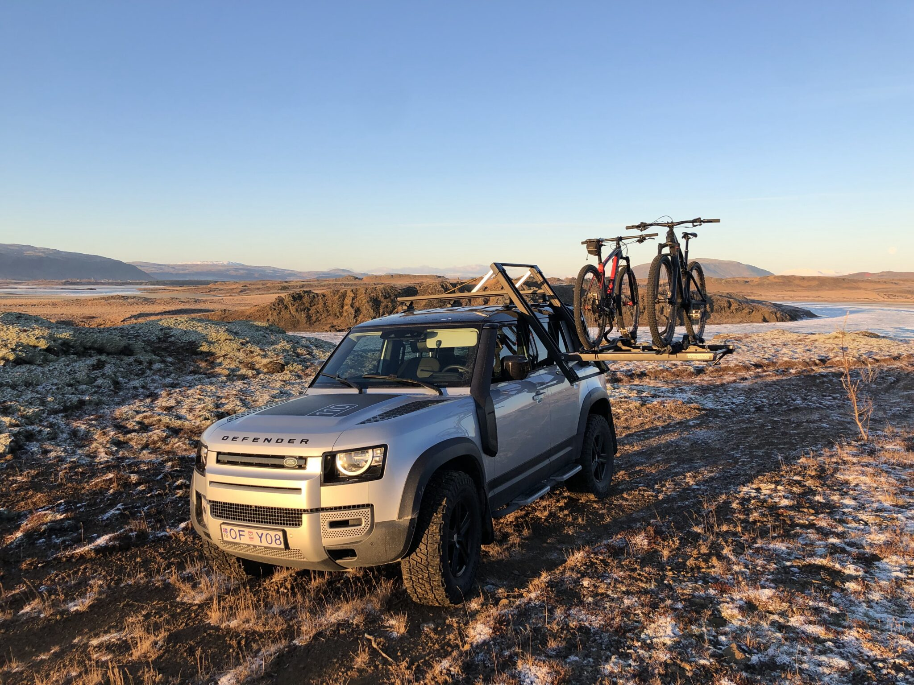

Hitt og þetta.....
Hér eru nokkrir punktar um hitt og þetta sem tengist rafhjólum eins og ýmislegt um viðhald, þvott og flutning á rafhjólunum.
ATH!!!!..... þetta er alls ekki tæmandi listi, bara nokkrir punktar sem mér datt í hug. Sendu mér endilega póst ef þú vilt sjá eitthvað
meira sem á heima hér.
Keðjan
Fyrst er að minnast á að fylgjast vel með keðjunni, halda henni hreinni og vera duglegur/dugleg að smyrja. Nauðsynlegt er að fylgjast vel
með keðjunni og mæla slitið á henni. Það þarf að skipta reglulega um keðjuna og er það gert á c.a. 500 km fresti ef hjólið er frekar mikið notað. Ég skipti sjálfur um keðjuna hjá mér eftir 700 km.
Skoða nánar
Demparar
Fyrir þau sem eru með "full suspension" hjól þá er nauðsynlegt að stilla dempara eftir sinni þyngd. Hér er myndband sem fer yfir hvernig t.d. SAG ofl. er stillt.
Skoða nánar
Bremsur
Næst er það bremsur, rafhjól eru þyngri en venjuleg hjól og slitna því bremsur hraðar. Fylgjast þarf með sliti á bremsuklossum og skipta um þá
reglulega.
Skoða nánar
Þvottur
Best er að þvo hjólið eftir hvern hjólatúr þegar farið er af malbikinu, annað hvort skola létt af því eða þrífa almennilega ef hjólið er
orðið mjög skítugt. Ég persónulega nota ekki háþrýsti þvott á hjólið, nota slöngu og svo fiber klút til að þurrka það. Hef reyndar heyrt misjafnar skoðanir
hvort að það sé í lagi að nota háþrýsti þvott eða ekki, svo það er bara að velja það sem þér finnst best.
Skoða nánar
Dekkin
Mörg rafhjól koma tubeless ready sem þýðir að þú getur sleppt því að nota slöngu í dekkjunum og hjólað með lægri þrýsting í dekkjunum
án þess að eiga það á hættu að sprengja slönguna. En það þarf að undirbúa dekkið áður en þetta er hægt. Læt video fylgja með leiðbeiningum um hvernig þetta er gert.
Skoða nánar
Eftir nokkrar ferðir í hrauninu fyrir ofan Hafnarfjörð var afturdekkið orðið skorið illa á hliðunum á tveim stöðum, ég ákvað að fá mér ný dekk sem eru með sér
styrktum hliðum. Það var frekar erfitt að koma þessum dekkjum undir hjólið, læt hér fylgja 2 myndbönd sem fara yfir hvernig er best að koma svona styrktum dekkjum undir hjólið.
Skoða nánar
Skoða nánar
Hnakkur
Ef að hjólið er með dropper post þá á alltaf að geyma hjólið með dropperinn uppi, slítur hann hraðar með því að geyma hann niðri.
Rafhlaða
Ef geyma á rafhjólið í lengri tíma án notkunar þá er best að hafa á milli 30% - 60% á rafhlöðu
Festingar á bíl
Aðeins flóknara er að velja sér festingar á bílinn fyrir rafhjól en venjuleg hjól. Rafhjólin eru þyngri og ekki er eins mikið úrval af
festingum í boði. Hér eru nokkrar leiðir sem ég rakst á þegar ég skoðaði þetta.
1. Festingar á krók fyrir 2-3 hjól, þetta er einfaldasta leiðin og er hægt að festa hjólin á þetta án þess að taka framhjól af hjólinu. Þessar festingar
fást hjá Poulsen.
Skoða nánar
2. Festingar á þak eða pall á bíl. Þessar festingar fást t.d. hjá Jeppó.
Skoða nánar
3. Festingar á pall á bíl sem prófílstál framleiða. Notaðir eru svo strappar eins og krossarar eru oft festir með, keypti svo gúmmí strappa í bílanaust til að halda afturhjóli niðri.
4. Dropracks frá Tarandus.
Skoða nánar
